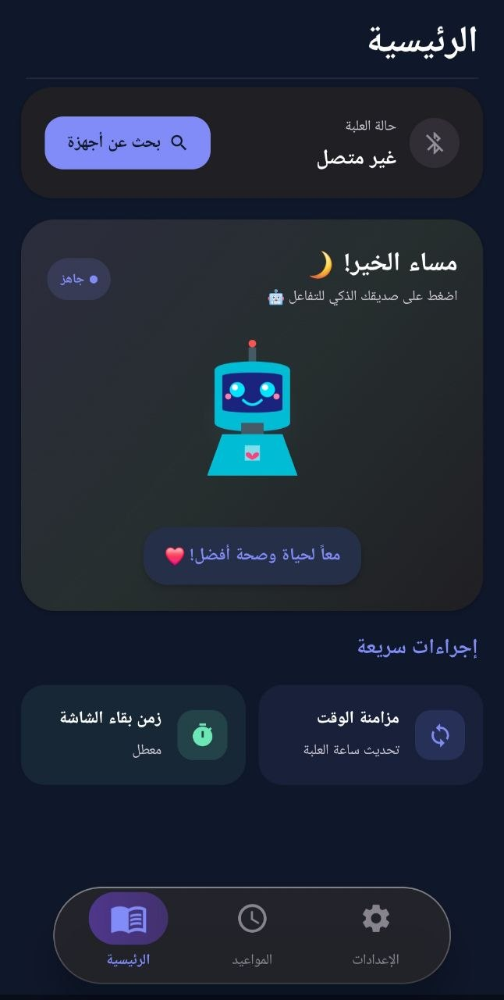
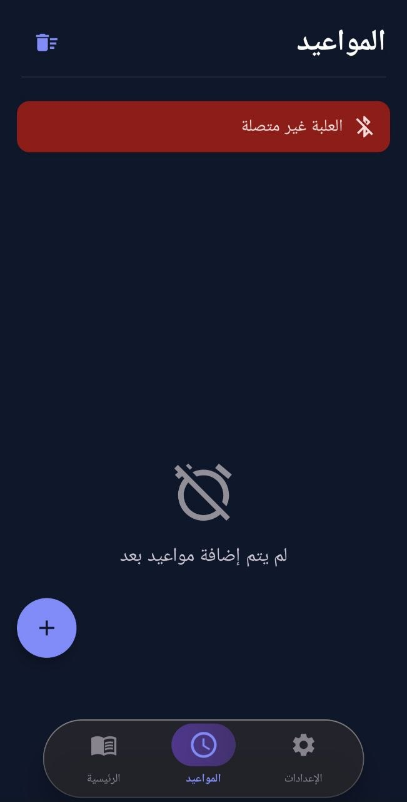
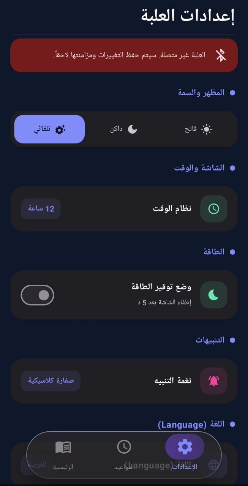

كل ما يعرفه الجهاز، في جيبك.
تطبيق سمارت دوز هو النافذة المشتركة بين المريض ومقدم الرعاية — حالة الجهاز اللحظية، وسجل كامل، والتنبيهات المهمة، دون ضجيج.
تنزيل مباشر لملف APK لأندرويد · امسح الرمز أو اضغط الزر. تطبيق iOS يصل مع إطلاق الجهاز.

الرئيسية
مبنيّ لشخصين مختلفين، في تطبيق واحد.
إعداد أولي موجَّه
أنشئ جدولًا كاملًا بسرعة — أضف الأدوية بالاسم أو بمسح ملصق الوصفة لتقليل أخطاء الإدخال اليدوي.
حالة لحظية للجهاز
اطّلع على ما هو محمَّل، وما هو مستحق، وما ينفد، حجيرة بحجيرة.
تذكيرات وإشعارات
تذكيرات موجهة للمريض وتنبيهات تصعيد منفصلة لمقدم الرعاية، بحدود قابلة للتخصيص.
سجل التزام وتقارير
سجلات قابلة للتصدير يمكن أخذها إلى موعد الطبيب أو فريق الرعاية.
وضع مقدم الرعاية
عدة مقدمي رعاية، لكل منهم حساب دخول وتفضيلات إشعارات خاصة به.
لوحة رؤى صحية
عرض اتجاهات الالتزام عبر الزمن، بلغة واضحة، لا مجرد سجلات خام.
قاعدة بيانات الأدوية والتفاعلات
تحذيرات تظهر بالضبط في لحظة استخدام ميزة المسح بالواقع المعزز.
إدارة إعادة التعبئة
تنبيهات نقص المخزون متاحة الآن؛ وتكامل طلب إعادة التعبئة من الصيدلية على خارطة الطريق.
وضع المنشآت
لوحة متعددة النزلاء وتصدير سجل تدقيق لفئة المؤسسات.
ليست نموذجًا تخيليًا — هذا هو التطبيق الحقيقي.
تتبّع للمواعيد وشاشة إعدادات قابلة للتخصيص بالكامل، تشمل المظهر الفاتح/الداكن، ووضع توفير الطاقة، ونغمات التنبيه، والدعم الثنائي للعربية والإنجليزية.

المواعيد

الإعدادات
الذكاء وراء التطبيق.
تعرّف على كيفية تحويل الذكاء الاصطناعي لبيانات الالتزام الخام إلى رؤى تتحرك قبل تفويت الجرعة.